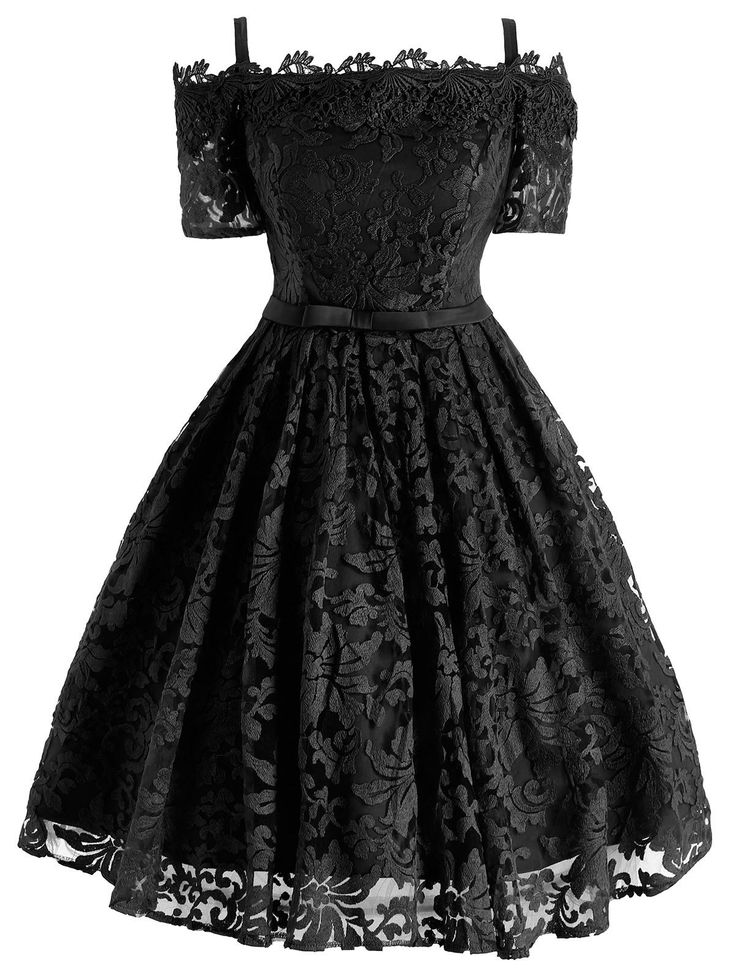
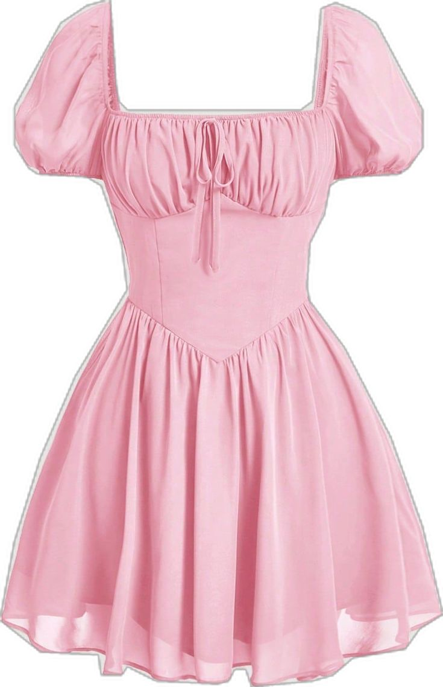
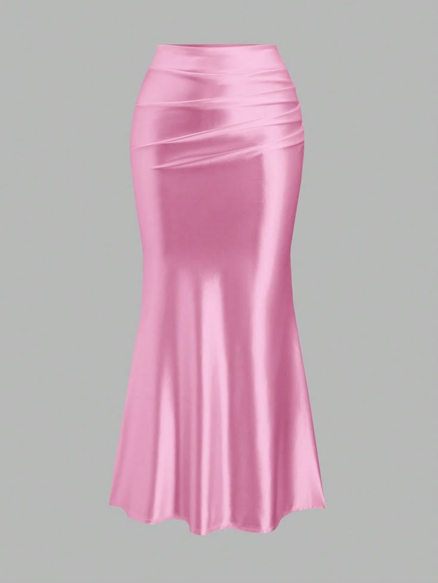
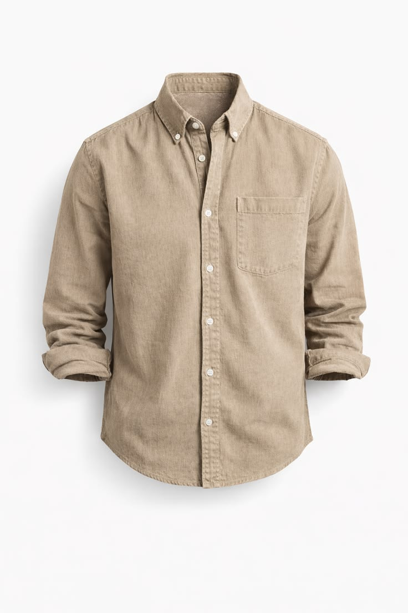
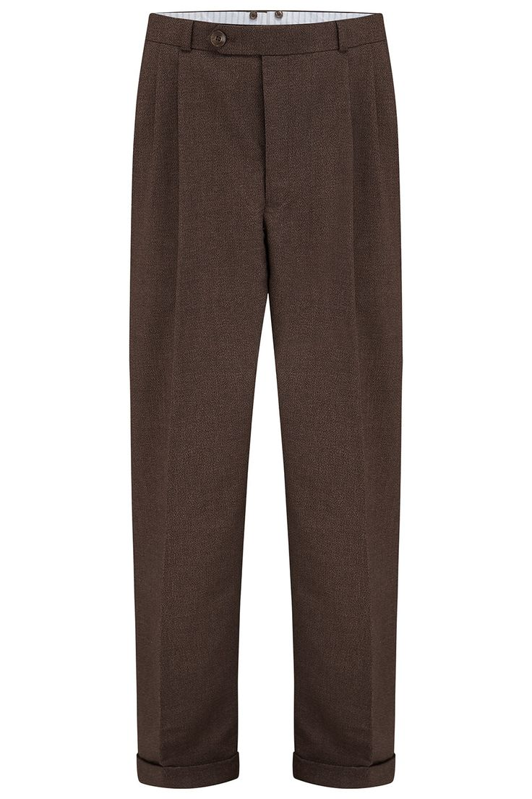

Svečana čipkana haljina
Elegantna haljina sa cvjetnim motivima i otvorenim ramenima,savršena za maturske večeri.

Kratka ljetna haljina sa puf rukavima
Lagana i prozračna haljina u nježnoj rozoj boji sa strukiranim gornjim dijelom i elegantnim puf rukavima.

Elegantna satenska suknja
Luksuzna suknja od satena ,idealna za svečane prilike i večernje izlaske

Muška lanena košulja
Lagana i prozračna košulja od mješavine lana za moderan izgled
Crna košulja
Vrhunska košulja od satenskog pamuka ,dizajnirana za prilike u kojima želite ostavit utisak

Strukirane tamnosmeđe hlače
Model širokog kroja sa klasičnim naborima i podvrnutim rubom za moderan vintage izgled